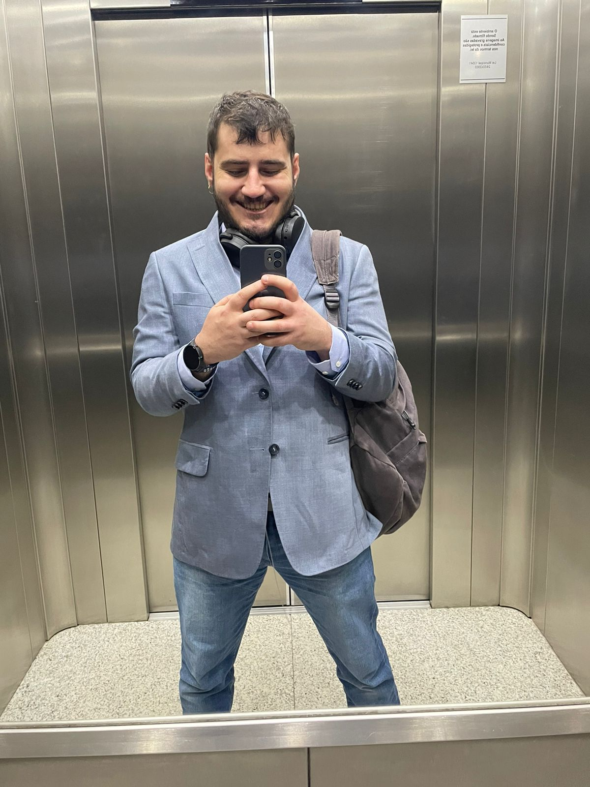

About Me

Senior Software Engineer at Genoa Capital
Career Goals and Aspirations:
- Transition to Machine Learning Engineer: My ambition is to transition into a Machine Learning Engineer role. I am passionate about being a part of the AI revolution, aiming to contribute significantly to this field's advancements.
- Active Participant in AI Revolution: I am excited about the transformative potential of AI and aspire to be at the forefront of this change, developing intelligent systems that innovate and improve efficiency.
Personal Traits and Philosophy:
- Persistence and Problem-Solving: My most notable traits are my persistence and an obsessive focus on problem-solving, driving me to overcome complex challenges and continuously evolve in my career.
Skills and Attributes:
- Technical Skills: Proficient in Python and Golang, and knowledgeable in cloud technologies, data structures, algorithms, and computing infrastructure.
- Proactive and Detail-Oriented: Known for my proactive nature and attention to detail, especially in managing complex projects.
- Passion for Emerging Technologies: Engaged with the latest developments in AI, exploring their practical applications.
- Communication and Empathy: Effective communication and empathy are central to my approach, facilitating successful collaboration and leadership.
Future Educational Plans:
- Intending to Pursue a Degree in Data Science (2024): I plan to commence my undergraduate studies in Data Science in 2024. This step represents my commitment to formalizing and expanding my self-taught knowledge, positioning me ideally for a career in machine learning.
- Self-Learning Journey: My educational path has been primarily defined by self-learning. Driven by an innate curiosity and proactive mindset, I have developed a comprehensive skill set in computing, AI, and emerging technologies.
As a Senior Software Engineer at Genoa Capital, I combine technical expertise with a commitment to innovation and growth. My goal to transition into machine learning and participate in the AI revolution reflects my ambition to contribute significantly to the future of technology and finance.